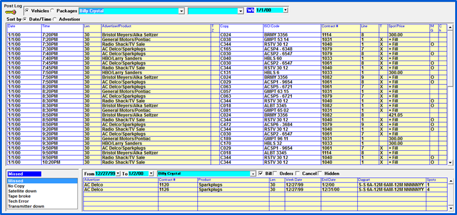

Post Log Screen
The top part of the Post Log screen is used to select the vehicle, avail type, and date that you want to view. The spots that aired appear in the grid in the center of the screen. The lower part of the screen displays the Missed/Cancel reason and “Hidden” spot control on the left, and missed, canceled, and hidden spots on the right.

Vehicle and Date Selection
This section explains the different selections available on the Post Log screen:
- Key: Click the key icon in the upper left corner to see an explanation of the different abbreviations and color coding used on the Post Log screen.
- Vehicles/Packages: This is defaulted to Vehicle. When the “Vehicles” option is selected, the dropdown to the right of this radio button displays a list of (non-package) vehicles. When the radio button is set to “Packages”, package vehicles will be shown in the vehicle dropdown. Note: Package vehicle spots can only be seen after a preliminary or final invoice has been created.
- Vehicle dropdown: Use this dropdown to select the vehicle that you will be reconciling.
- Avail: Select “All” to see the spots booked in all avails, or select a specific avail to only see those spots booked in that specific avail name (for the selected vehicle).
- Calendar: Use the blue toggle to set the view to the weekly (Wk) or monthly (Mo) view. Select the start date from the calendar. Dates in the past that are accessible in Post Log appear in blue, while future or inaccessible dates (as a result of the final log not being generated yet) are shown in red. Note: If you are using Live Log or are set to Check if Day is Complete in Site Options, those dates in the past that are marked as complete will appear in green.
- Day is Complete: When the “day is complete” option is turned on (see the section Post Log Setup Options later in this document), checkboxes appear for each day of the week under the vehicle dropdown, as shown in the image below.
Spot Area
The aired spot information lists all spots for the selected vehicle, avail name and dates. This information can be sorted by date and time or alphabetically by advertiser by selecting the “Sort by Date/Time or Advertiser” radio button.
Information in the white fields can be altered, yellow fields are automatically updated.
Spot Area Fields
The following is an explanation of each field shown:
- Date: shows the date the spot aired.
- Time: lists the time the spots aired.
- Len: the spot length.
- Advertiser/Product: The advertiser name and product from the contract.
- TZ (Time Zone): a check mark is displayed in this field if there is time zone copy, otherwise this field is left blank.
- Copy & ISCI Code: lists the copy and ISCI code that was assigned to this spot. This can be changed by clicking in the field and selecting another piece of copy.
- Contract number: displays the contract number for the spot.
- Line: the contract line number that the spot came from.
- T: spot type, shows the type of spot. The available types are:
- Blank: contract spot
- S: PSA
- M: Promo
- T: Remnant
- Q: Per Inquiry
- X: Fill
- Spot Price: the spot price from the contract. If this is a fill spot, “- Fill” indicates it will not show on the invoice, “+Fill” indicates it will.
- MG (Makegood): A letter “G” in this field indicates the spot is a makegood; a letter “O” indicates that is an outside spot.
- CH (Post Log Change): A letter “Y” in this field indicates the spot was changed in Post Log (or updated by an automation system import).
If you right mouse click on a spot, additional ordered information is shown.
Color coding
The following color coding is used on spots in the Spot area:
- Black: not billed.
- Red: ISCI missing.
- Green: Billed.
- Magenta date: cross midnight spot.
- Magenta time: bill airing and simulcast.
Missed/Canceled Spot Area
The lower section of the screen is used to display missed and canceled spots, and is also used to drag missed spots from missed to the schedule area.
The selectivity options are:
- From/To dates: You can define any date range here, including past months.
- Vehicle: The vehicle defaults to the vehicle you are reconciling, but can be changed to “All” vehicles.
- Bill: If this option is not selected, any missed spots that have been billed will not be shown. This option is checked on by default.
- Orders: Will show all advertisers that have orders for the missed dates selected. This can be useful if you are posting a week and need to add bonus spots for an advertiser. (Missed spots are shown with a count of the number of spots in the “Spots” field, to make it easy to distinguish missed spots from ordered spots.)
- Cancel: Will include the canceled spots for the selected vehicle. Canceled spots are shown in red.
- Hidden: Will display the hidden spots for the selected vehicle. Hidden spots are shown in light blue.
The spots in this area include the Advertiser name, contract number, vehicle, length, week date, end date, daypart and spot count (for missed, canceled and hidden spots).
The left side of the Missed Area lists the Missed Reasons. These missed reasons are used when marking a spot as missed by dragging the spot onto the missed reason.
The “missed” toggle can be changed to “canceled” or “hidden”.